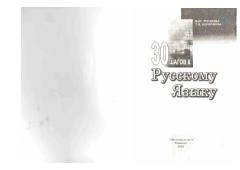

3ШRus tilini bosqichma-bosqich va mustaqil o'rganish uchun 30 darsdan iborat qo'llanma.
Ushbu kitob rus tilini mustaqil va o'qituvchi rahbarligida o'rganuvchilar uchun mo'ljallangan tasviriy o'quv qo'llanmadir. U 30 ta amaliy darsdan iborat bo'lib, dialoglar, grammatik topsiriqlar va lug'atlarni o'z ichiga oladi. O'quv materiallari so'zlashuv va yozma nutq ko'nikmalarini rivojlantirishga yordam beradi.